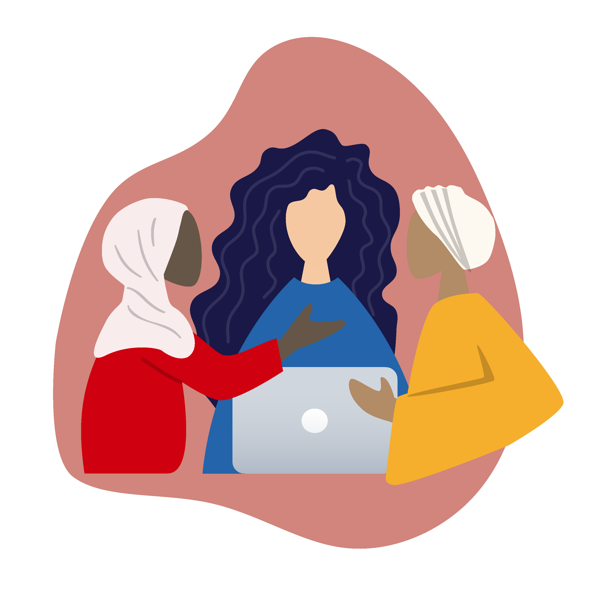

Respected Ma’am,
We are the ACM-W VIT community, an initiative by our student chapter ACM-VIT. Our goal is to bridge the gender gap in the field of technology by empowering girls. We aspire to do so by engaging in a plethora of activities that educate, challenge and inspire young girls. Today, only 25% of computing workforce are women and we hope to balance it in the near future. We want to launch an effort that connects young girls with women leaders of the community to guide them.

For this, we would appreciate your participation in our segment titled InspiHER. This program will entail a short video answering a few questions, talking about your career and sharing a few experiences. The InspiHER series will be up on our social media handles to increase outreach. Your support for the community will help and inspire many people.
ACM is an internationally recognized organization with corporate sponsors such as Oracle, Google and Microsoft Research.Your participation will definitely garner attention from the ACM-W India community, an organization that is growing day by day. Furthermore, we would be delighted to invite you for lectures, workshops and seminars in the near future.
Thanking you,
ACM-W VIT